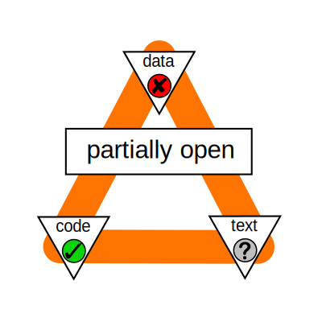
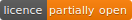
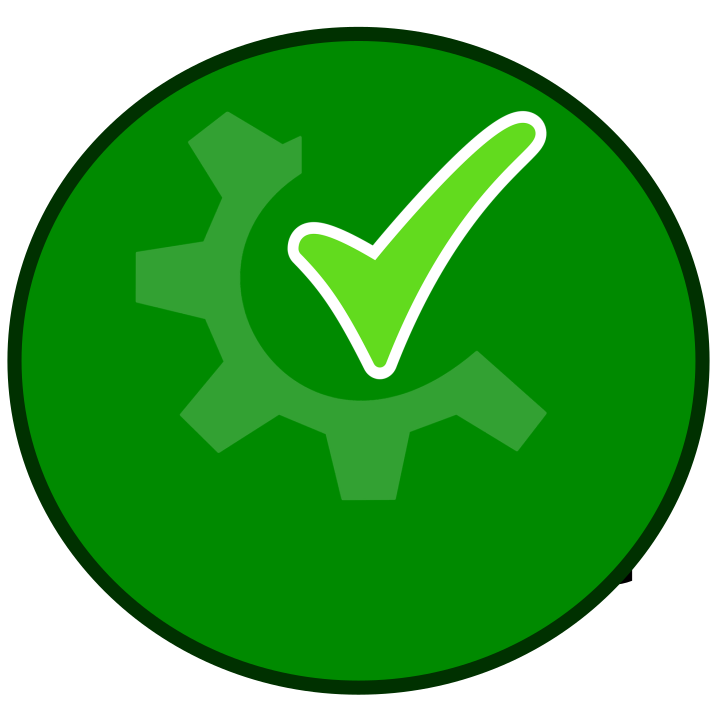
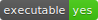

This project aims to create badges that helps in making research reproducible. That is, the badges will explain the state of any component (for example data, code and articles) in a research so that it can be understood by others when they have a look at it later and possibly even build upon it. The badges aim to display the state of key factors about the research such that the output is very evident and presented right at the face of it.
The results are presented in an interactive manner that gives the display of the badge an even better meaning. The results are provided with a certain colored background which depends on the type of output. For example a positive result is shown with a green color, a negative result is shown with a red color and intermediate results are sometimes in yellow or orange color, again depending upon the specific type of outcome.
In this project key aspects about a research that a user is interested in knowing are represented evidently on the badges. For example a user might want to know if a research is peer-reviewed or not, in order to get an idea about the quality of the research. Similarly a user might also be interested to know about the licensing or the executibility of a code in a research. These important factors along with some more are displayed on the badges along with their results.
Nowadays, we get into contact with badges nearly everyday, e.g in software development communities (see: shields.io) and digital learning (see: openbadges.org) Badges provide a concise, recognizable yet useful piece of information, such as the build state or the number of downloads.
There is a part of the API that is the same for every task. That base part is as following:
/api/1.0/badge
The rest of the API is case dependent. The structure would be dependent on the name of the task, platform from which metadata of a research is taken, the id for calling a particular research compendium and a final addition which is optional in case you want to request a big badge, is the keyword "extended". Example APIs are provided below:
This is an example from the licensing task:
/api/1.0/badge/licence/id/extended (returns a big badge)
/api/1.0/badge/licence/id (returns a small badge)
This is an example from the executibility task:
/api/1.0/badge/executable/id/extended (returns a big badge)
/api/1.0/badge/executable/id (returns a small badge)
The extender is part of the o2r project, a DFG-funded research project. It aims to improve reproducibility in modern research. You can find more about the project here.
Here you can find the link to the current GitHub repository of the o2r extender. For feedback and suggestions, feel free to create a Github issue.This study project was realized at the Institute for Geoinformatics (ifgi) at the University of Münster under the supervision of Daniel Nüst during the winter term 2016/17. The participants of the project team are: Antonia van Eek, Clara Rendel, Lasse Einfeldt, Laura Meierkort, Marlena Götza, Salman Khalid, Shahzeib Tariq Jaswal, Nimrod Gavish, Matthias Mohr and Daniel Nüst.
The extender is an open source project and licensed under [Apache License 2.0](https://www.apache.org/licenses/LICENSE-2.0).